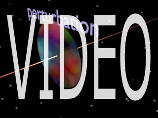
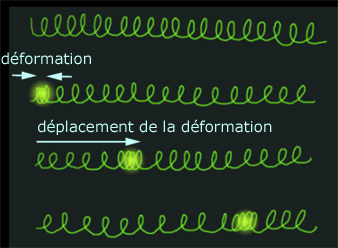
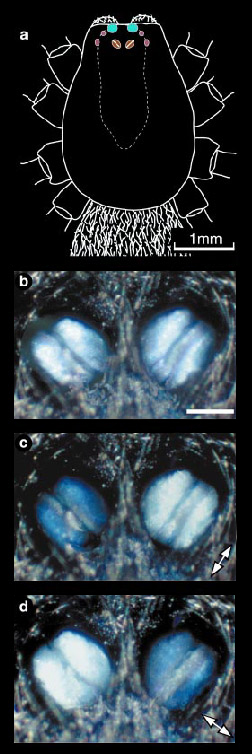
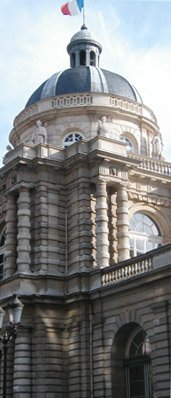
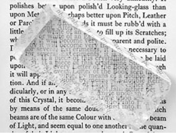
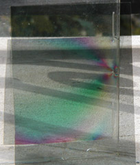

|
|
Navig.
page/section


_____
|
|
Pages soeurs
I, A propos des liants
II, Bulles, siccativ., struct. élec.
III, Caséine, phosphore, dissociation
IV, Les orbitales
V, L'aérogel
VI, Polarisation de la lumière
VII, Sfumato et diffusion Rayleigh
VIII, Les interférentielles
IX, Dextrine, farine et chiralité
X, L'ocre bleue
XI, Les métamatériaux
XII, Le jaunissement
XIII, Laser etc.
XIV, L'holographie
XV, L'holographie numérique
XVI, Extérieur, intérieur, chaux
XVII, L'électrolyse et les ions
XVIII, L'électricité, un peu plus loin
XIX, Oxydation, métaux
XX, Les échelles
XXI, Nature et évolution des résines
XXII, Le mouillage pigmentaire
XXIII, La molette
XXIV, Blanche neige
XXV, Lumière et matière
XXVI, Magnétisme
XXVII, Ambre et vieilles branches
XXVIII, L'origami miroir
XXIX, Le feu
XXX, Peau du métal
XXXI, La ville en un souffle
XXXII, Oxyder des matériaux
XXXIII, Ocre bleue, une solution
_____
|
Copyright © www.dotapea.com
Tous droits réservés.
Précisions cliquer ici
|
|
| |
|
|
Les
dialogues sur la physique-chimie
appliquée
aux arts
Chapitre
VI
Polarisation de la lumière
|
 |
dial dial
dial
Ce chapitre des
Dialogues de Dotapea
est
une discussion entre Jean-Louis, physico-chimiste au CNRS, et un
candide, Emmanuel.
Les personnages sont réels, la
discussion aussi. Elle peut reprendre à tout moment et ce texte peut s'allonger.
Tout d'abord une introduction vidéo par le biais du canal
web de ArtRéalité.

Ces animations sont schématiques, forcément
simplificatrices, mais elles peuvent favoriser la compréhension des concepts
exposés dans cet article.
|
Emmanuel : On a tendance à confondre le
phénomène de la polarisation avec celui des
interférences, mais on reviendra à celui-ci
dans un autre chapitre. Il y a aussi l'effet rayleigh et d'autres
phénomènes en relation directe avec les arts plastiques. Parlons de
polarisation exclusivement pour ce texte.
Ce phénomène étrange, qui peut caractériser intrinsèquement la lumière,
nous est imperceptible directement, contrairement à certains animaux
(voir ci-contre). Des artistes s'y sont intéressés de près et il
semblait nécessaire d'évoquer la polarisation dans les Dialogues
physique/chimie.
De quoi s'agit -il ?
Jean-Louis : L'introduction de la
notion simple de polarisation demande de préalablement définir et
comprendre plusieurs autres notions.
Une "onde" est une
perturbation spatio-temporelle d'un milieu. Ca commence fort ! Prenons
tout de suite l'exemple de la pierre lancée dans une étendue d'eau
calme.
Partant du point d'impact, on observe des vaguelettes
concentriques qui se propagent de façon centrifuge.
Lors du
passage de l'onde (de la perturbation) l'eau de la surface monte et
descend avant de retourner petit à petit à son état initial non
perturbé. On parle d'onde amortie.
La distance
entre deux crêtes est la "longueur d"onde", elle est fonction notamment
de la vitesse de l'onde dans le milieu considéré. Si la perturbation est
continue et répétitive, on parle d'onde entretenue.
Son
amplitude est alors constante, un même point de l'espace bougera
toujours de la même quantité. Enfin, toujours dans le cas des ondes crée
par cette pierre qui tombe dans l'eau, on note que l'onde (la
perturbation) se propage horizontalement (les cercles concentriques)
mais que les points de la surface se déplacent verticalement, soit à 90°
de la direction de propagation.
On dit d'une telle onde qu'elle est
"transversale".
C'est le
cas le plus courant, c'est notamment le cas des ondes lumineuses, par
contre
les ondes sonores sont des ondes "longitudinales" : les particules du
milieu de propagation se déplacent dans le même sens que l'onde.
Le
meilleur exemple c'est celui d'un ressort à boudin très long, que l'on
pince brièvement à une extrémité. Le pincement se propage le long du
ressort. Ce pincement est une déformation du milieu propagatif (le
ressort) parallèle au déplacement de l'onde.

|
|
|
Une perception difficile
pour l'humain mais naturelle pour certains animaux
La
lumière provenant de la voûte céleste est faiblement polarisée,
principalement dans la direction perpendiculaire aux rayons solaire.
L'oeil humain n'y est pas sensible, mais certains animaux ont la
possibilité physiologique de détecter cette polarisation, qui leur sert
notamment à s'orienter.
Les abeilles et les fourmis s'orientent
généralement à partir de la position du soleil, mais en l'absence de
celui-ci (nuages,...) elles peuvent utiliser la polarisation de la
lumière céleste. D'autres animaux, en particulier les criquets Schistocerca gregaria, n'utilisent que la polarisation de la lumière, et
ont même développé des photorécepteurs spécialisés situé à la périphérie
de leurs organes de vision ordinaire. Enfin, l'araignée Drassodes
cupreus a même développé des "yeux" uniquement dédiés à la
détection de la polarisation de la lumière.

[courtoisie de/courtesy of
Marie Dacke et/and Dan Nilsson, Lund University, Suède/Sweden
© Copyright]
La preuve que les yeux en question sont bien
sensibles à la polarisation apparaît clairement quand on éclaire ces
organes avec une lumière polarisée (photos c et d), la lumière réfléchie
est plus ou moins intense selon que la polarisation est identique à
celle de l'oeil ou perpendiculaire.
|
|
[Note : en complément d'information,
on peut lire l'article
L'onde de la section des
concepts physico-chimiques mais ce
n'est pas indispensable à la compréhension
de cet exposé]
Revenons à
la polarisation. Quand la
direction de déplacement des particules du milieu (je continue avec mon
exemple d'une onde dans un milieu liquide, mais c'est pareil pour la
lumière qui se propage, même dans le vide) est constante et bien
définie, on dit que l'onde est "polarisée". Si la direction du
déplacement des particules varie sans cesse, l'onde n'est pas polarisée.
La lumière
est une perturbation propagative et périodique du champ électrique (et
magnétique aussi d'ailleurs, c'est une onde électromagnétique). Dit
comme ça, c'est moins joli, non ? Le champ électrique de cette onde
perturbe les petits électrons de tout matériau qui se trouve sur son
passage, et c'est donc la nature électronique des matériaux qui leur
confère in fine les propriétés optiques particulières
lien vers futur nouveau chap JC
qu'ils
possèdent : transparents, colorés, métalliques,...
Les ondes
électromagnétiques sont des ondes transversales, le champ électrique (le
responsable de la perturbation, je le rappelle) est toujours
perpendiculaire à la direction de propagation ou sa direction décrit une
ellipse connue (polarisation elliptique). Une lumière non polarisée a un
champ électrique perpendiculaire à la direction de propagation mais dont
la direction (celle du champ) varie en permanence sans schéma
particulier. Un coup à droite, un coup à gauche, un coup en rond, etc...
à l'échelle de la nanoseconde.
[voir vidéo]
|
|
|
|
Les ondes
lumineuses ordinaires, de tous les jours, ne sont pas polarisées : le
champ électrique varie en permanence dans tous les sens, tout en restant
perpendiculaire à la direction de propagation.
Contrairement à celui de certains animaux, l'oeil humain n'est pas
sensible à la polarisation de la lumière.
|
|
Exemple du caddie |
|
Il y a
schématiquement trois façons de polariser la lumière : par réflexion sur
une surface, par absorption dichroïque, par l'utilisation de matériaux
biréfringents.
|
|
Trois façons de polariser la lumière |
|
L'histoire
veut que ce soit Etienne-Louis Malus (1775-1812) qui ait découvert le
phénomène de polarisation de la lumière par réflexion. La lumière du
soleil couchant se reflétait dans les vitres du Sénat avant d'atteindre
son laboratoire après avoir subi une deuxième réflexion sur sa fenêtre.
Malus
s'aperçut alors qu'en modifiant l'orientation qu'il donnait à sa fenêtre
il pouvait diminuer l'intensité de la lumière réfléchie : la lumière
solaire était polarisée par sa première réflexion puis par la seconde.
Cette deuxième réflexion étant perpendiculaire à la première, elle ne
produisait plus de lumière. Il n'existe de nos jours plus de polariseurs
fonctionnant sur ce principe, en tout cas pour la lumière visible, mais
le phénomène est facile à mettre en évidence en utilisant des
polaroïds. [note : il s'agit de feuilles plastiques
particulières, voir
image en fin d'article]
Le moyen le
plus simple et le plus économique de polariser la lumière ou d'observer
sa polarisation est l'utilisation de polaroïds. On en trouve dans les
afficheurs à cristaux liquides, les filtres photographiques, les
lunettes de soleil,... Ces dispositifs sont basés sur l'absorption
dichroïque de certaines molécules.
|
|
1.
par réflexion |
|
Parenthèse :
En
fonction de sa nature moléculaire, un matériau peut être coloré ou
transparent. Un matériau coloré absorbe sélectivement certaines
longueurs d'ondes et laisse passer les autres. On parle de bande
d'absorption. Par exemple, un matériau qui absorbe les longueurs d'onde
rouge-orangé apparaîtra vert. Cette absorption est généralement
isotrope, c'est à dire qu'elle ne dépend ni de la direction
d'observation ni de l'état de polarisation de la lumière incidente.
Certains matériaux ont une absorption qui dépend de la direction
d'observation, ils sont "dichroïques"
(du grec "deux couleurs"). A la base il s'agit de molécules possédant
une certaine anisotropie de forme, ce qui fait que l'onde lumineuse
incidente (un champ électrique, je le rappelle) ne sera pas absorbée de
la même façon selon que sa polarisation est longitudinale (dans le sens
de la grande longueur de la molécule) ou transversale (dans le sens de
la largeur).
Deux
conséquences immédiates :
* une lumière incidente non polarisée
sortira polarisée du matériau,
* une lumière incidente polarisée sortira
plus ou moins affaiblie du matériau.
Terminologie : lorsqu'un matériau polarisant est placé sur le chemin
d'une onde lumineuse déjà polarisée il prend le nom d'analyseur.
Un analyseur permet de détecter l'état de polarisation d'une onde
incidente.
Une
dernière remarque : l'utilisation d'un polaroïd pour polariser la
lumière naturelle conduit nécessairement à la perte de 50% de
l'intensité de cette dernière, puisque qu'elle sera absorbée dans le
matériau. Les polaroïds sont donc toujours très colorés (gris-bleu, pour
les plus courants, à base d'iode).
Emmanuel : Est-ce que tu peux donner des
exemples de matières polarisantes du même type que cette iode ?
Jean-Louis : Je ne suis pas expert... Dans
le cas de polariseurs à base d'iode, c'est pas directement l'iode qui
apporte le dichroïsme. En fait il y a un polymère orienté, c'est-à-dire
dont les chaînes sont étirées dans la même direction, qui devient
électriquement conducteur grâce à l'iode. Les chaînes de polymère se
comportent alors comme des "courts-circuits" optiques dans le sens de
leur longueur. Ca se complique...
Quelques
illustrations :
La lumière
naturelle est polarisée par sa réflexion sur des surfaces, par exemple
une carrosserie de voiture, le vernis d'un tableau, une étendue d'eau.
Après réflexion la polarisation est linéaire et parallèle au plan de la
surface réfléchissante.
Les
lunettes polaroïd utilisent des verres polarisants orientés
verticalement. En effet, la lumière solaire, réfléchie par une surface
d'eau (généralement horizontale...) donnera des reflets polarisés
horizontalement. Le fait de les observer à travers des polariseurs
orientés verticalement fait que la lumière de ces reflets sera absorbée
sélectivement dans les verres de lunette, donc plus de reflets !
Un
photographe qui veut reproduire un tableau et se trouve gêné par les
reflets de lumière utilisera un filtre polarisant pour s'en débarrasser.
Enfin, si on possède un polariseur dont on ne connaît pas le sens, il
suffit de regarder une surface brillante au travers du polariseur et de
faire tourner celui-ci. Quand les reflets sont au minimum d'intensité,
la direction de polarisation du polariseur est verticale.
|
|
2.
par absorption dichroïque |
|
Pour finir
:
Un matériau
optiquement transparent est caractérisé entre autres par son indice de
réfraction, qui est une mesure de la vitesse de la lumière dans ce
matériau.
Emmanuel : Quand tu parles de mesure de la
vitesse de la lumière dans un matériau, à quoi cela correspond-il
concrètement ? Pourquoi n'est-ce pas 300 000 km/s ? Y a-t-il des champs
électriques « sur le déclin » qui paressent ou qui se fanent ?
|
|
3.
par biréfringence |
|
Jean-Louis : La lumière ne va à sa vitesse
maximale que dans le vide. Dans l'air c'est presque pareil. Mais dans
les matériaux solides elle interagit avec les électrons du milieu et la
conséquence est qu'elle va moins vite. La vitesse est alors égale à
300 000 km/s divisé par l'indice de réfraction. Dans l'eau (n=1.33) la
lumière va à 225 000 km/s. Dans le verre 200 000, dans le diamant
120 000.
La plupart des matériaux n'ont qu'un seul
indice de réfraction, ils sont optiquement isotropes. Certains matériaux
ont un indice de réfraction qui varie en fonction de l'angle d'incidence
de la lumière entre une valeur minimale et une valeur maximale. Ils sont
appelés biréfringents.
[lire un complément à
ce dialogue dans l'article La biréfringence du glossaire]
|
|
Vitesse de la lumière et réfraction
Plus d'informations dans l'article du glossaire.
Cliquer ici |
|
Emmanuel : Ce sont les
cristaux, non ?
Jean-Louis : Tous les cristaux ne sont pas
biréfringents. Le diamant est isotrope. Le quartz
et la tourmaline sont biréfringents du fait qu'ils donnent lieu au
phénomène de double réfraction : un rayon incident ressort double !
L'exemple archi-connu du cristal de calcite, si on pose un cristal de
calcite sur un texte écrit, le texte apparaît dédoublé.

Outre le
fait que ce phénomène de biréfringence est utilisé pour fabriquer des
polariseurs et des analyseurs de très bonne qualité, il donne lieu à de
spectaculaires interférences lorsque le matériau biréfringent est
observé entre deux polariseurs. Applications en minéralogie et en
analyse des structures.
|
|
Cristal et biréfringence |
|
Emmanuel :
Des artistes ont utilisé ces effets dans les années 1970/80. Je ne
parviens qu'à cela, on peut sûrement faire beaucoup mieux.
.
Jean-Louis : Prendre le boîtier d'un CD. En
lumière naturelle tu vois un matériau transparent. Si tu mets le boîtier
entre les deux polariseurs, en faisant un peu tourner (dans son plan) un
des polariseurs pour maximiser le contraste tu vois de magnifiques
franges colorées. C'est parce que le plastique du boîtier a subi des
contraintes lors du moulage, les contraintes l'ont rendu biréfringent.
Dans les coins, en particulier, tu verras très bien les lignes
d'écoulement du plastique fondu dans son moule.
Emmanuel : La lumière est-elle polarisée
lorsqu'elle traverse simplement une vitre ?
Jean-Louis : Partiellement, si
l'incidence est oblique.
|
|
Psychedelic works |
|
La suite : chapitre VII |
Retour
début de page
|
|

 Communication
Communication


|
|